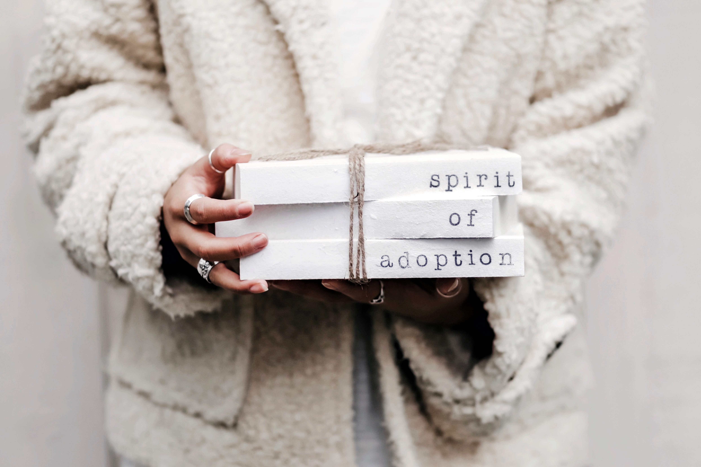

Take Action
Helping stray animals isn't just the effort of one person. It's the contribution of the entire community. And you can take part in this. Below are some of the ways YOU can help to decrease the number of homeless companion animals.
1. Contact Animal Services

When you see a stray animal, do not attempt to capture it yourself - either you or the animal may be inadvertently hurt in the process. Instead, contact your local animal services and they will send an official to safely pick up the animal. In the facility, the workers will scan for a microchip to look for its owner. If there isn't a microchip, the animal will be tested for behaviors and then go up for adoption
Learn More on this site
2. Adopt an animal
By choosing to adopt over buy, you can literally save an animal life. Give a pet a forever home and decrease the numbers of stray animals by one.
However, adopting an animal is not an easy feat. Before you make a decision, you should think the situation over. Taking care of an animal requires dedication, time, and money. In addition to care, there are more steps you should take when deciding to adopt an animal. You can learn more in the link below
What you should do when adopting a pet
3. Microchip Your Pet

Placing a microchip on your pet allow officials to identify your pet and its owner quickly and efficiently. According to CCSPCA, there is a pattern of increased numbers of lost animals on major holidays such as Fourth of July and New Year's Day, when lots of fireworks are fired and animals become distressed. Microchipping your pet helps officials to guide your pet to home.
4. Keep you pet for life

Keeping a pet is not a short-term decision. Once you bring an animal home, you should have the dedication to keep it for the rest of its lifetime, which could last 10 to 15 years. Even when its fur starts to gray and health starts to deteriorate, you should stay by its side. Because your pet would never leave you behind.
5. Fight Puppy Mills
Puppy mills are places where breeders force female animals to constantly breed offsprings in terrible environment and conditions. The animals are not given proper sanitation, space, food, care, water, and other essential elements to their wellbeing. According to ASPCA, there are an estimated 10,000 puppy mills operating in the United States. The most direct way you can join in the fight against puppy mills is to adopt over buy.
The Fight Against Puppy Mills
You have reached the end of this quick list, but certainly not the end of the ways you can help animals. Educate yourself and others, and make this world a better place for not only humans but also animals that others left behind.